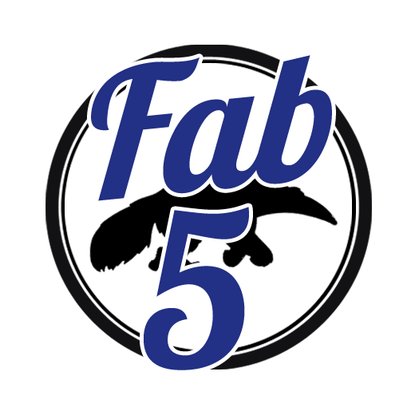

The Fab 5
Meet the Fab 5!
We are currently (2014) upper-division students of the Donald Bren School of Information and Computer Sciences (ICS), and we have seen fellow students change majors within the school, realizing that their initial major does not actual suit them. Unfortunately, this occurs primarily because the ICS website does not contain explicit, detailed information that would help students determine the perfect match.
We don’t like seeing others groan about being uninterested in their major, so we want people to choose the right major once they enroll in the school. This is why we decided to suggest an ICS major to you, depending on your personality and interests. As students of the ICS school, we are familiar with the topics presented in the school’s majors. But don’t worry! We also did our research about each major, consulting the Student Affairs Office and fellow students for details not available on the ICS website.
We hope that our website helps you choose the right major the first time!
Noel Canlas
I am a 3rd-year Informatics major, specializing in Human-Computer Interaction, and minoring in Mathematics. But you know what? Someone should have told me what this “informatics” thing was back when I was filling out my college applications. I started out with Computer Science, eventually uninterested in the topics presented in my classes by the time I became a 2nd-year. I did some research on the ICS website, debating whether or not I should transfer out of the ICS school. By consulting other people, I found out that I actually wanted to be an Informatics major. THAT was what I wanted when I first thought about computer science! I may not be that great at rigorous programming, but hey I sure start cooking when it comes to software design!
Now you probably understand why I am part of the Fab 5. Yup. It’s because I’m fabulo-- er... willing to help people pick their ideal major by showing them what to expect to see in each one. Hopefully you don’t have to go through the trouble of changing majors within the School of ICS!
[Back to Top]Evelyn Luu
I am fabulous.
Started as a 1st year CSE major, didn't like the C's, became a 3rd year SE major.
[Back to Top]Steven Melena
I am a fourth year Informatics major with a specialization in Software Engineering and I also compete on the UCI Cross Country and Track teams. Coming into UCI I was undeclared because I had not decided on what I wanted to major in yet. During my sophomore year a friend suggested that I take the intro to programming course, which was ICS 21 at the time, and after taking that first course I realized that programming was something I was really interested in and found it be fun and exciting. However, here at UCI there are many major options under the Donald Bren school of Information and Computer Science so choosing an actual major in this school was difficult. After a few more classes, looking through course catalogs, and having a couple of meetings with counselors I choose to major in Informatics which has been a great experience. Having the problem of trying to choose a major under ICS was a difficult process which is why I believe the Major Matcher is a great tool for incoming students who are interested in an ICS major. Major Matcher will help students who, like myself, are having trouble finding the right major for them and will assist them in finding a major that best fits their interests.
[Back to Top]Trung Nguyen
I am a fourth-year Informatics Major specializing in Human-Computer Interaction. Prior to transferring to UCI, I majored in Computer Science. Unfortunately, I promptly realized that the major did not entail what I imagined. It involved an excessive amount of coding and theoretical thinking; I longed activities involving design and studying the complex interactions between humans and computers. Upon arrival at UCI, I discovered the Informatics Major, which perfectly fitted my desire.
[Back to Top]Chelsea Schneider
I am a fourth year Informatics: Software Engineering major and I am on the UC Irvine Track and Cross Country team. I first came in declared as Public Health Policy but soon changed my major to Informatics. Before I changed my major, I had no idea what Informatics was or if I was even capable of completing a major in the Donald Bren School of Information and Computer Science. During this transition It would have been very helpful if there was some other resource that was easily accessible. I had already made several appointments with an academic advisor and looked at the general catalogue but I felt as if I still needed more guidance. Now, you have the information and tools to choose a major within the Donald Bren School of Information and Computer Science that is best suited for you. Good luck!
[Back to Top]